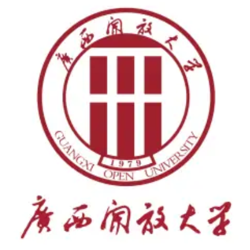

About Me
My name is Yunhao Chen, I come from Guangdong, China.
I used to work in IT field back in China, I have a solid foundation in various technologies, with over three years of hands-on experience in Java, Vue.js, Spring Boot, Nginx, MySQL, and Linux shell scripting.
I came to Canada in August 2023, enrolled in Computer Programming at St. Clair College, I took this course to learn more comprehensive skills of programming.
I would love to be a Java Developer in Canada, since our main course of the program is Java, additionally, I was coding in Java when I was Working in China.
top 5 favourite hobbies
- Watch Coding Videos
- Watching Movies
- Playing Video Game
- Practice Coding Skill
- Watching news
top 5 favourite entertainment
- YouTube Videos
- Game Of Thrones
- GTA
- LeetCode
Education
St. Clair College
Diploma of Education, Computer Programming Sep 2023 - Apr 2025 Learning to be a full-stack programmer, we learn about java, python, javascript, HTML5 & CSS, c#, php, Mysql, ect.

Guangxi Open University
Diploma of Education, Computer/information Technology Administration and Management Mar 2020 - Jun 2022 Learning how to monitor and administration of an organization's information technology systems: hardware, software and networks.Volunteering
Assistant In Kitchen
The Downtown Mission - DTM Sep 2023 - Otc 2024 • Assisting with meal services in the kitchen.• Clean and maintain hygiene in the kitchen.
• Serving food to the guests.
Employment History
Sushi Chef
Tenko Sushi, 4450 Walker Rd, Windsor, Windsor, ON Nov 2023 - Present • Preparing Sushi and Sashimi – Crafting various sushi types like rolls and sashimi and other traditional Japanese foods.• Handling and Cutting fish – Cleaning, filleting, and cutting fresh fish while ensuring proper storage for freshness.
• Managing Inventory and Ingredients – ordering, receiving, and managing fresh ingredients, such as fish rice, crab meat, avocado, cucumber, and other meat and vegetables.
• Presentation and Plating – Creating visually appealing dishes through artistic plating and garnishing.
• Customer Interaction – Preparing sushi in front of guests at sushi bars and answering questions or providing recommendations.
• Knife Skills and Equipment Handing – Using specialized sushi knives and maintaining them for precision cutting.
Lube Technician
Provincial Chrysler, 1001 Provincial Rd, Windsor, ON Otc 2023 - Present • Changing oil, battery, headlights, taillights and filters for vehicles• Changing/repaired car tires, check tire pressure and tread depth.
• Car Maintenance Checklist Report writing
• Inspect various products and parts, such as different types of lifts, balancing machines, tire changers, and other automotive repair-related equipment.
• Calibrate headlights, taillights and other small vehicle components.
• Troubleshoot adjusted or replaced automotive parts to ensure proper functioning.
JAVA Developer
Guangdong Shaohua Human Resources Co. LTD, Guangzhou, China Sep 2022 - Aug 2023 • Developed programs using JAVA, Python and Database SQL Scripting• Developed Web pages using HTML, VUE, Axios and Echart
• Deployed applications on Linux and Windows Servers
• Installed MySQL database sever on Linux and Windows
IT technical support
Pingxiang Gongneng Human Resources Co., Ltd., Guangzhou, China Nov 2020 - Aug 2022 • Developed programs using JAVA, Python and Database SQL Scripting• Developed Web pages using HTML, VUE, Axios and Echart
• Deployed applications on Linux and Windows Servers
• Installed software on Linux and Windows
• PC hardware and software troubleshooting
• LAN network build-up and troubleshooting
Skills
- Java
- Python
- HTML&CSS
- JavaScript
- PHP
- MySQL
- Linux Shell
- Spring-boot
- SQL Script
- Nginx
- Vue